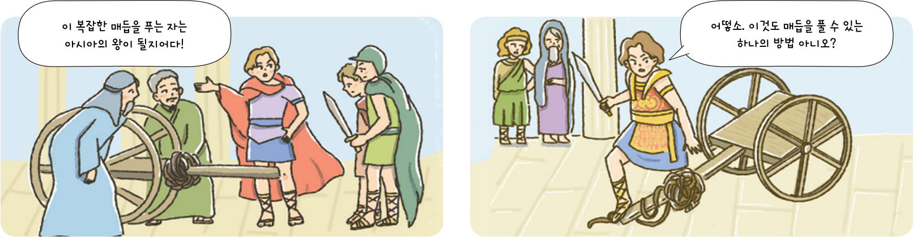

활동하기 고르디우스의 매듭
● 최근에 내가 경험한 복잡한 갈등 상황을 떠올려 보고, 이러한 갈등 상황에 어떻게 대처하고 행동할지 이야기해 보자.

●갈등 상황과 대처 방법
나에게는 친하게 지내는 친구 가연이와 민수가 있다. 우리 셋은 삼총사처럼 늘 함께였다. 그런데 어느 날 가연이와 민수가 의견 차이로 말다툼을 했고, 사이가 멀어졌다. 나는 두 사람을 함께 만나 우리 셋이 좋아했던 음식을 나누어 먹으며 둘의 갈등을 해소하고자 하였다.